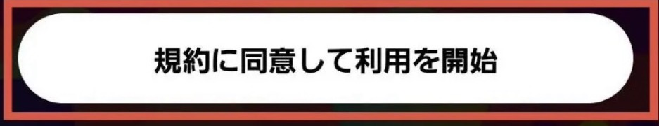
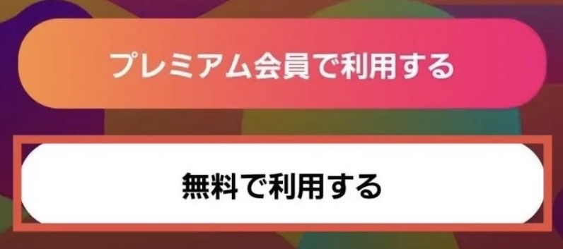
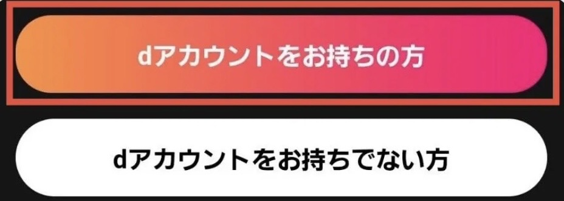
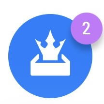
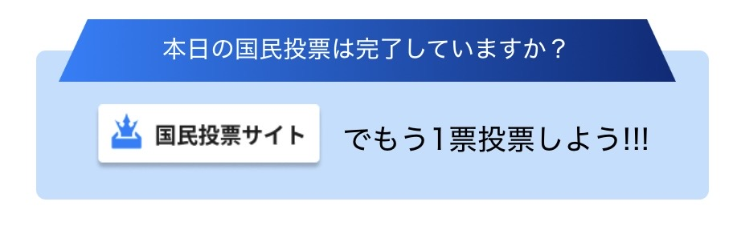
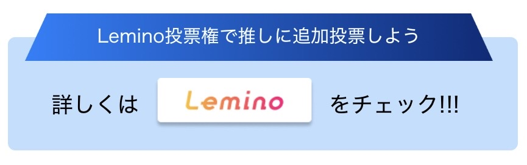

Produce 101 Japan 新世界
現在の状況により必要な手順が変わります
下の質問に回答をお願いします（最大2問）
Leminoアプリがあると追加でもう1票投票できます
無料会員で問題ありません



投票は毎日可能で、Leminoアプリと公式HPで合計2票投票できます
Leminoアプリから先に投票すると投票ページの遷移がスムーズです
Leminoアプリがない方は公式HPからのみ投票してください



投票は毎日可能で、Leminoアプリと公式HPで合計2票投票できます
Leminoアプリから先に投票すると投票ページの遷移がスムーズです
Leminoアプリがない方は公式HPからのみ投票してください
投票は毎日可能で、Leminoアプリと公式HPで合計2票投票できます
Leminoアプリから先に投票すると投票ページの遷移がスムーズです
Leminoアプリがない方は公式HPからのみ投票してください
最後までお読みいただきありがとうございました！
ぜひ柳谷伊冴くんに投票していただけると嬉しいです！